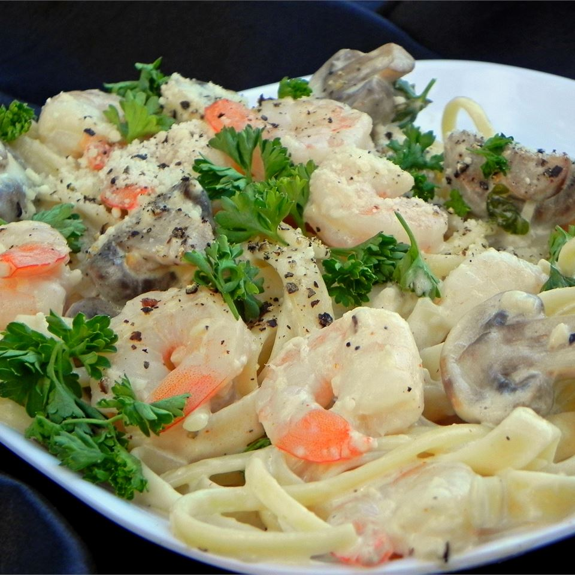

Shrimp Fettuccine Alfredo

Description
This is a very simple recipe and it tastes divine! My sister and I were trying to come up with the perfect Alfredo recipe and we found it.
Ingredients
- 1 pound fettuccini pasta
- 1 tablespoon butter
- 1 pound cooked shrimp - peeled
- 4 cloves garlic, minced
- 1 cup half-and-half
- 6 tablespoons grated parmesan cheese
- 1 tablespoon chopped fresh parsley
- salt to taste
Directions
-
Bring a large pot of lightly salted water to a boil. Add pasta and cook for 8 to 10 minutes or until al dente; drain.
-
In a large skillet, cook and stir shrimp and garlic in the butter for about one minute. Pour in half and half; stir. Sprinkle Parmesan cheese in one tablespoon at a time, stirring constantly. After all Parmesan is added, mix in parsley and salt. Stir frequently making sure it does not boil. Sauce will take a while to thicken.
-
When sauce has thickened, combine with cooked pasta noodles; serve hot.
Link to original recipe